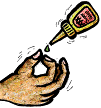

|  |
with Vinyl Kits by Denis Bohm |

|
 Make sure you open the box at the store and check out the kit before
you buy.
Find a subject that you like and look for an interesting pose.
Check the surface for imperfections like air bubbles.
Plan out how you would assemble and paint the model.
Look for things like capes that hide part of the surface and
make them hard to get at when painting.
The easiest kit is one that can be completely assembled before painting.
The exception is when the seams are setup so that they are hidden and
you can paint the subassemblies, like head or arms,
and then glue them in place afterwards.
You may want to stick to 1/6 scale because there will be a lot
less painting involved than if you choose a 1/4 scale model.
Also, look at the part count since some of the kits can get
pretty complex!
Make sure you open the box at the store and check out the kit before
you buy.
Find a subject that you like and look for an interesting pose.
Check the surface for imperfections like air bubbles.
Plan out how you would assemble and paint the model.
Look for things like capes that hide part of the surface and
make them hard to get at when painting.
The easiest kit is one that can be completely assembled before painting.
The exception is when the seams are setup so that they are hidden and
you can paint the subassemblies, like head or arms,
and then glue them in place afterwards.
You may want to stick to 1/6 scale because there will be a lot
less painting involved than if you choose a 1/4 scale model.
Also, look at the part count since some of the kits can get
pretty complex!
The kit shown here is the
Horizon
Hulk. This is a great starter kit because it has a great
pose, excellent sculpting, few parts, and all the seams are easy to
get to.
pin, fill, glue, putty, prime, paint, and seal. Once you understand the basics of each step you should be able to turn out a pretty good kit. Next we'll list the supplies you will need to master the basics: hobby knife, dish soap, tooth brush, plaster, super glue, putty, primer, acrylic paints, wide flat brush, fine tip brush, paint palette, gloves, cloth, plastic cups.

 The thing to know about vinyl is that when it is heated up it gets
pretty soft and cuts like butter.
If you try to trim your vinyl kit without heating it up then first
lay out all the different sizes of band-aids, the soap, antibiotic
cream, and program 911 into your phone so you can call by pressing
with your nose.
There are two easy ways to heat up vinyl parts.
You can use a blow dryer and heat up the parts exactly where you want.
This works out pretty well because you can just snap the blow dryer on
and reheat a part whenever it starts to cool off.
The bad part is that blow dryers often make a lot of noise.
The other method is to heat up some water and immerse your parts
in the water.
Really hot tap water should do the trick.
Use a sharp hobby knife and always cut away from all of your body parts.
While trimming test fit your parts while they are still hot so you can
pop them in and out of any sockets easily.
The thing to know about vinyl is that when it is heated up it gets
pretty soft and cuts like butter.
If you try to trim your vinyl kit without heating it up then first
lay out all the different sizes of band-aids, the soap, antibiotic
cream, and program 911 into your phone so you can call by pressing
with your nose.
There are two easy ways to heat up vinyl parts.
You can use a blow dryer and heat up the parts exactly where you want.
This works out pretty well because you can just snap the blow dryer on
and reheat a part whenever it starts to cool off.
The bad part is that blow dryers often make a lot of noise.
The other method is to heat up some water and immerse your parts
in the water.
Really hot tap water should do the trick.
Use a sharp hobby knife and always cut away from all of your body parts.
While trimming test fit your parts while they are still hot so you can
pop them in and out of any sockets easily.
If you need to adjust the stance of your figure you should take
care of it at the same time as pinning the feet. Heat can be
used to soften the vinyl and bent wire can be inserted into the
legs and over the crotch to hold the legs closer together or
farther apart. For more details checkout
Steve Goodrich's
notes on this subject.
 There are three reasons to fill your model. The first is to make it
more stable so it won't fall over as easily. The second so that it
won't sag or warp later. Third, it may sound silly, but it
really feels more like a sculpture than a toy when it weighs more.
Inexpensive plaster can be poured into the lower part of the body.
Don't put in too much plaster or you will raise the center of gravity
and make the model less stable.
To get ready for filling, just glue together enough of your model
so that the plaster can be poured into the lower parts.
Make sure the joints are sealed well with super glue so plaster
won't ooze out.
There are three reasons to fill your model. The first is to make it
more stable so it won't fall over as easily. The second so that it
won't sag or warp later. Third, it may sound silly, but it
really feels more like a sculpture than a toy when it weighs more.
Inexpensive plaster can be poured into the lower part of the body.
Don't put in too much plaster or you will raise the center of gravity
and make the model less stable.
To get ready for filling, just glue together enough of your model
so that the plaster can be poured into the lower parts.
Make sure the joints are sealed well with super glue so plaster
won't ooze out.
 One other way to fill your kit is with Polyfoam. This is a two part
mixture that heats up and expands into a rigid foam. Since it heats
up and expands you need to be careful about warping the vinyl parts.
You can use tin foil to line the vent hole so that none of the foam
that expands out of the vent hole contacts the outside of your kit.
The hardended foam is easily trimmed with an X-Acto knife. Make sure
you use gloves when working with liquid Polyfoam and read the warnings
on the label.
One other way to fill your kit is with Polyfoam. This is a two part
mixture that heats up and expands into a rigid foam. Since it heats
up and expands you need to be careful about warping the vinyl parts.
You can use tin foil to line the vent hole so that none of the foam
that expands out of the vent hole contacts the outside of your kit.
The hardended foam is easily trimmed with an X-Acto knife. Make sure
you use gloves when working with liquid Polyfoam and read the warnings
on the label.
Yet another method is to scrunch up packing material and stuff it into the kit. Newspaper or foam packing "peanuts" can be used. Any type of long rod can be used to pack the material into the deep parts of the model.
One brand of filling material to try is Polyfoam.
If the parts don't fit well even after applying heat then you may want to "stitch" the parts together. This is done by gluing a small part of the seam, hitting it with kicker, cleaning it up, and then repeating until you have worked your way around the whole seam.
If you decide to paint some parts before gluing, make sure that you use a hobby knife to trim down to raw vinyl at the joints where you will be applying the glue. Super glue doesn't work well on paint.
Small gaps can be filled by letting a small bead of super glue flow into the seam. As it flows in it should spread out into a nice smooth layer that won't need sanding. Super glues come in different thicknesses. Thicker glues will be able to fill bigger gaps. If the glued area does need sanding don't wait too long, the longer you wait the harder the glue gets.
One brand of super glue and kicker to try is Pacer. An alternative
glue to try is UHU Bond-All.
For filling medium sized gaps you can use Squadron White putty, then smooth it with a Q-Tip dipped in nail polish remover. To get deep into cracks you might want to try using a putty syringe. If you are careful you may not need to do any sanding when it it dry. If you do need to sand then finish up by smoothing off the putty with a very fine sand paper. Or if you are careful you can touch up the area after it is dried with a Q-Tip dipped in nail polish remover. Squadron has some shrinkage and takes a while to dry, so don't use it for large gaps.
Large gaps can be filled with Milliput White (for smooth areas) or Experts-Choice (for rougher areas). Both are two part epoxy putty. Mix equal amounts of the two parts until the mixture has a uniform color. Press into the large gaps, then with a touch of water on your gloved finger smooth out the putty. If you do a good job with the water you might not have to do any sanding. If you do need to sand then start with a medium sand paper and work your way down to a fine sand paper.
Some brands of putty to try are Milliput, Experts-Choice, Hexcel A&B,
Tamiya Polyester, Squadron, and Dr. Microtools.
 Priming your model will make your base coat cover really well,
don't skip this step!
Spraying on a single light coat is all that you need.
A light color like white or light grey seem to work the best for most
situations. Dark grey and black can be used for kits that are mostly
dark.
Make sure you cover all of the model by spraying from all angles.
Don't forget to spray up from below and down from above.
If you notice any areas that need to be filled better, fix them now.
These problems can't be fixed up by painting.
Just spray on a very light coat of primer, too much will hide details
and look bumpy.
Let the primer dry for at least 24 hours before painting.
That will give it time to shrink up so that you can see all of the
detail and form a good bond with the vinyl.
Priming your model will make your base coat cover really well,
don't skip this step!
Spraying on a single light coat is all that you need.
A light color like white or light grey seem to work the best for most
situations. Dark grey and black can be used for kits that are mostly
dark.
Make sure you cover all of the model by spraying from all angles.
Don't forget to spray up from below and down from above.
If you notice any areas that need to be filled better, fix them now.
These problems can't be fixed up by painting.
Just spray on a very light coat of primer, too much will hide details
and look bumpy.
Let the primer dry for at least 24 hours before painting.
That will give it time to shrink up so that you can see all of the
detail and form a good bond with the vinyl.
If you used a primer color other than white then you may want to coat any areas that will have light tones like flesh, yellow, or red with white paint. This will let the final color show without any color distortion from the base coat.
Some vinyls may react with some types of primers. The safest thing to do is to spray some primer on one of the scrap pieces of vinyl that you have left after trimming. Then you can check to see that the primer dries properly and doesn't cause any surface bumps.
Some brands of primer to try are Floquil, Armory, and Krylon.
Some brands of sealer to try are Floquil, Gunze Sangyo, and Krylon.
The Gremlins in the Garage webzine is a production of Firefly Design. If you have any questions or comments please get in touch.
Copyright © 1994-1997 Firefly Design.